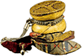
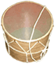
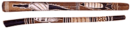
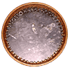
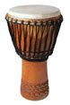
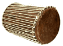

Damaru:
Dhol: 1. (Доол/Давул) Армянский
2. Ведущий барабан индийской музыки bhangra.
Didgeridoo(Didjeridu или Yidaki(на языке Yolno): духовой инструмент с тысячелетней историей, на котором аборигены Австралии аккомпанировали пению, танцам и который использовали для изменения сознания исполнителя и аудитории.
Фактически didgeridoo создают термиты, которые разъедают сердцевину деревьев Stringybark(род эвкалипта), оставляя после себя пустые ходы. Подходящие участки упавших деревьев обрезают с обоих концов, затем очищают и украшают инструмент. Мундштук делают из пчелиного воска или эвкалиптовой смолы.
Виртуозы отличаются проворством языка, контролем дыхания - особенно техникой циклического дыхания(исполнитель выдувает воздух набранный щеками на вдохе через ноздри) - а также большим об'емом памяти. Только мужчинам позволено играть на этом инструменте в течение таких общественных церемоний, как браки, похороны, празднества и аккомпанируя клановым песням и песням детей. По традиции аборигены отправляют детей в кустарниковые заросли с didgeridoo, чтобы природа сама научила их играть.
Doira(gaval):
Мастера игры на дойре в состоянии исполнять сложнейшие ритмические узоры, нередко инструмент является единственным аккомпаниментом танцам.
Dry guitar: Акустическая гитара. Замечательного заирского исполнителя, уже ушедшего, Jean Bosco Mwenda называли "The Master of the Dry Guitar".
 Dumbek(Dumbec, Doumbek, Doumbec, или Darbuka): Арабский одноголовый барабан в форме бокала. По традиции инструмент делали из керамики, покрывая голову козлиной или рыбьей кожей. В наши дни покрытие, как правило, синтетическое, а для корпуса используются такие разнообразные материалы, как красное дерево, медь, аллюминий(и другие металлы) и традиционная керамика. Из-за того, что он открыт снизу, получается акустическая воронка, которая производит глубокий резонирующий низкий звук. Один из главных аккомпанирующих инструментов танцам живота.
Dumbek(Dumbec, Doumbek, Doumbec, или Darbuka): Арабский одноголовый барабан в форме бокала. По традиции инструмент делали из керамики, покрывая голову козлиной или рыбьей кожей. В наши дни покрытие, как правило, синтетическое, а для корпуса используются такие разнообразные материалы, как красное дерево, медь, аллюминий(и другие металлы) и традиционная керамика. Из-за того, что он открыт снизу, получается акустическая воронка, которая производит глубокий резонирующий низкий звук. Один из главных аккомпанирующих инструментов танцам живота.

Небольшой барабан в форме песочных часов, сделанный из двух человеческих полу-черепов, покрытых кожей, по которым ударяют два шарика, подвешенных на струнах. Используется тибетскими монахами Shartse.Dhol: 1. (Доол/Давул) Армянский

национальный большой двухсторонний барабан. Изготавливается из единого скрученного куска дерева, собранного с двух сторон обручами. Поверх обычно натягивают выстриженную овечью или козью шкуру, одна толще другой. Исполнитель обычно использует две разные колотушки, одной, называемой jglun(или tokmak) ударяет по более плотной коже, другой рукой более легкой по тонкой коже.2. Ведущий барабан индийской музыки bhangra.
Didgeridoo(Didjeridu или Yidaki(на языке Yolno): духовой инструмент с тысячелетней историей, на котором аборигены Австралии аккомпанировали пению, танцам и который использовали для изменения сознания исполнителя и аудитории.

Фактически didgeridoo создают термиты, которые разъедают сердцевину деревьев Stringybark(род эвкалипта), оставляя после себя пустые ходы. Подходящие участки упавших деревьев обрезают с обоих концов, затем очищают и украшают инструмент. Мундштук делают из пчелиного воска или эвкалиптовой смолы.
Виртуозы отличаются проворством языка, контролем дыхания - особенно техникой циклического дыхания(исполнитель выдувает воздух набранный щеками на вдохе через ноздри) - а также большим об'емом памяти. Только мужчинам позволено играть на этом инструменте в течение таких общественных церемоний, как браки, похороны, празднества и аккомпанируя клановым песням и песням детей. По традиции аборигены отправляют детей в кустарниковые заросли с didgeridoo, чтобы природа сама научила их играть.
Doira(gaval):

Узбекский, таджикский и уйгурский ударный перепончатый инструмент, род бубна. Состоит из деревянной рамы с натянутой кожей. С внутренней стороны рамы подвешены брячающие металлические кольца.Мастера игры на дойре в состоянии исполнять сложнейшие ритмические узоры, нередко инструмент является единственным аккомпаниментом танцам.
Dry guitar: Акустическая гитара. Замечательного заирского исполнителя, уже ушедшего, Jean Bosco Mwenda называли "The Master of the Dry Guitar".
Devil Chaser: Филиппинский перкуссийный инструмент, который используется, чтобы отразить нападение Дьявола, и как музыкальный инструмент.
На филиппинском называется Tugangay, подобные 'гудящие палки' распространены и в других странах, например Batu-tu в Новой Гвинее. Инструмент вырезают из бамбука и расщепляют на две части с одной стороны с тем, чтобы он издавал характерное гудение, когда по нему ударяют ребром ладони или стучат об колено.
Di: Традиционная китайская поперечная бамбуковая флейта. Приобрела широкую популярность во времена династии Song (960-1127). Cегодня распространены две разновидности - bangdi и qudi.
В корпусе di 12 отверстий: первое - дульце, второе заклеивается тонкой растительной или животной пленкой, затем 6 - для изменения высоты извлекаемых звуков и 2-4 последних - для общего понижения/повышения строя, а также для продевания шнурка. Корпус перевязан шелковыми нитками, расположенными кольцами.
Donso ngoni: Разновидность ngoni большого размера, дословно лютня охотника.
Дудук(Дудуки): Армянский национальный духовой инструмент. Также встречается на Кавказе и в Турции(под названием Mey). Первые упоминания о дудуке относятся к 1200(по армянским источникам) или к XVI веку(по европейским). В Армении инструмент исторически изготавливают из корня абрикосового дерева и он бывает трех размеров, от 28 до 40 см длиной, с 7-9 боковыми отверстиями и широкой двойной тростью. Диапазон дудука - одна октава, строй обычно диатонический.
Обычно играли, как минимум, на двух дудуках: один исполнитель вел мелодию, другой, называемый damkash, поддерживал непрерывный гул, называемый dam. Однако существовали и целые оркестры до 15 дудукистов в составе.
В наши дни всемирный интерес к инструменту связан с гениальным Дживаном Гаспаряном.
Dun-Dun(Doun-Doun): Семья нигерийских talking-drums народности Yoruba.
На филиппинском называется Tugangay, подобные 'гудящие палки' распространены и в других странах, например Batu-tu в Новой Гвинее. Инструмент вырезают из бамбука и расщепляют на две части с одной стороны с тем, чтобы он издавал характерное гудение, когда по нему ударяют ребром ладони или стучат об колено.
Di: Традиционная китайская поперечная бамбуковая флейта. Приобрела широкую популярность во времена династии Song (960-1127). Cегодня распространены две разновидности - bangdi и qudi.
В корпусе di 12 отверстий: первое - дульце, второе заклеивается тонкой растительной или животной пленкой, затем 6 - для изменения высоты извлекаемых звуков и 2-4 последних - для общего понижения/повышения строя, а также для продевания шнурка. Корпус перевязан шелковыми нитками, расположенными кольцами.

Djembe: Западно-африканский барабан в форме кубка с натянутой кожей антилопы или козы, часто с металлическими пластинами kesingkesing, применяемыми для усиления звука. Появился в Малийской Империи в XII веке и образно назывался Healing Drum/Исцеляющий Барабан. Полагают, что открытая форма корпуса происходит от обычной дробилки зерна. В зависимости от удара, djembe производит три основных звука: басовый, тональный и резкого шлепка.Donso ngoni: Разновидность ngoni большого размера, дословно лютня охотника.
Дудук(Дудуки): Армянский национальный духовой инструмент. Также встречается на Кавказе и в Турции(под названием Mey). Первые упоминания о дудуке относятся к 1200(по армянским источникам) или к XVI веку(по европейским). В Армении инструмент исторически изготавливают из корня абрикосового дерева и он бывает трех размеров, от 28 до 40 см длиной, с 7-9 боковыми отверстиями и широкой двойной тростью. Диапазон дудука - одна октава, строй обычно диатонический.
Обычно играли, как минимум, на двух дудуках: один исполнитель вел мелодию, другой, называемый damkash, поддерживал непрерывный гул, называемый dam. Однако существовали и целые оркестры до 15 дудукистов в составе.
В наши дни всемирный интерес к инструменту связан с гениальным Дживаном Гаспаряном.
Dun-Dun(Doun-Doun): Семья нигерийских talking-drums народности Yoruba.

Больший из них называется Iya Ilu, что означает «барабан матери». Деревянный корпус барабана покрыт с двух сторон кожей, стянутой ремнями. Звук извлекают изогнутой палкой и иногда пальцами другой руки. Давлением на ремни исполнитель может изменять натяжение кожи на голове барабана, таким образом изменяя высоту его звучания.